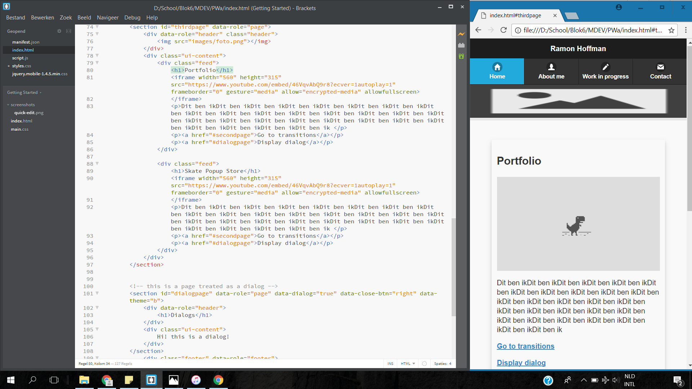

Deze winkel is tijdelijk te vinden in 's-Hertogenbosch. Je kunt hier skaten maar ook gear kopen. Vind je de boards die er hangen niet mooi? Dan kun je je eigen deck en griptape designen!
Bekijk de winkel van binnen in bovenstaande video.
Connect
De Connect verbindt jou en je kind, zelfs als je er niet bij bent.
De Connect monitort jouw kind en geeft een waarschuwing wanneer het zich in de gevarenzone bevindt. Je kunt het hartritme en de ademhaling voelen op afstand. Zo kun je bij je kind zijn, zelfs als je niet thuis bent!
Een gat in de weg?!
We kwamen onderweg een groot, diep gat in de weg tegen..
Nee dit is een experiment waarin ik met movement tracking met een 3D scene probeer samen te voegen. Dit is gedaan met Blender, 3D software.
Ik ben Ramon Hoffman, een Communication & Multimediadesign student. Ik hou mij bezig met ontwerpen.
Dit ben ikDit ben ikDit ben ikDit ben ikDit ben ikDit ben ikDit ben ikDit ben ikDit ben ikDit ben ikDit ben ikDit ben ikDit ben ikDit ben ikDit ben ikDit ben ikDit ben ikDit ben ikDit ben ikDit ben ikDit ben ikDit ben ikDit ben ikDit ben ikDit ben ikDit ben ikDit ben ikDit ben ik
Portfolio

Momenteel ben ik bezig met het maken van mijn Portfolio. Ik ben een app aan het maken waar mijn Portfolio op staat. Wanneer ik hier klaar mee ben begin ik aan de website voor desktop.
Arduino
Aan het eind van blok 6 moet ik een Arduino project af hebben. Ik wil een robotje maken die zelf de weg vindt.